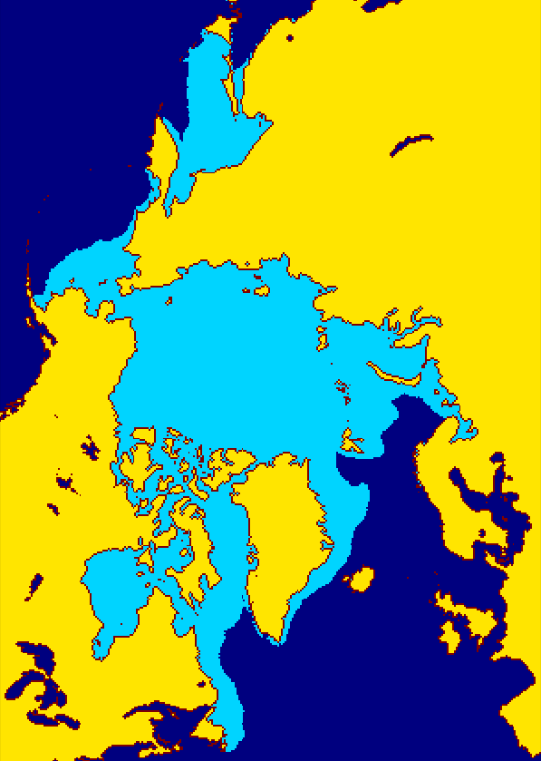
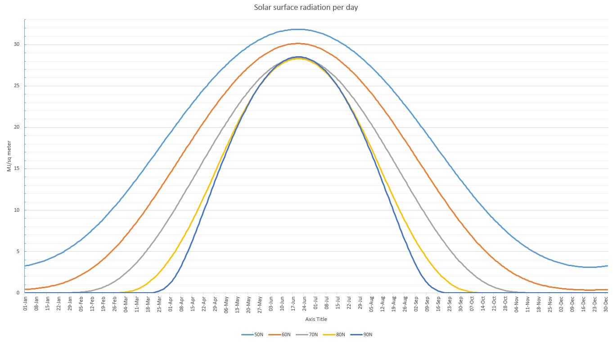
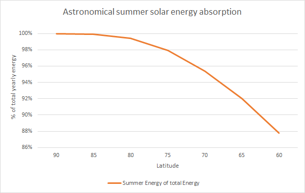
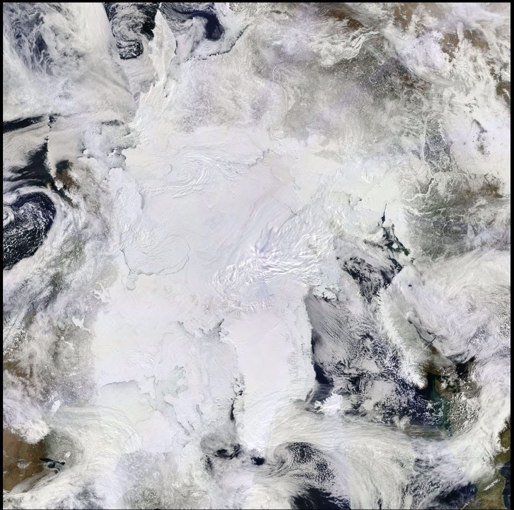
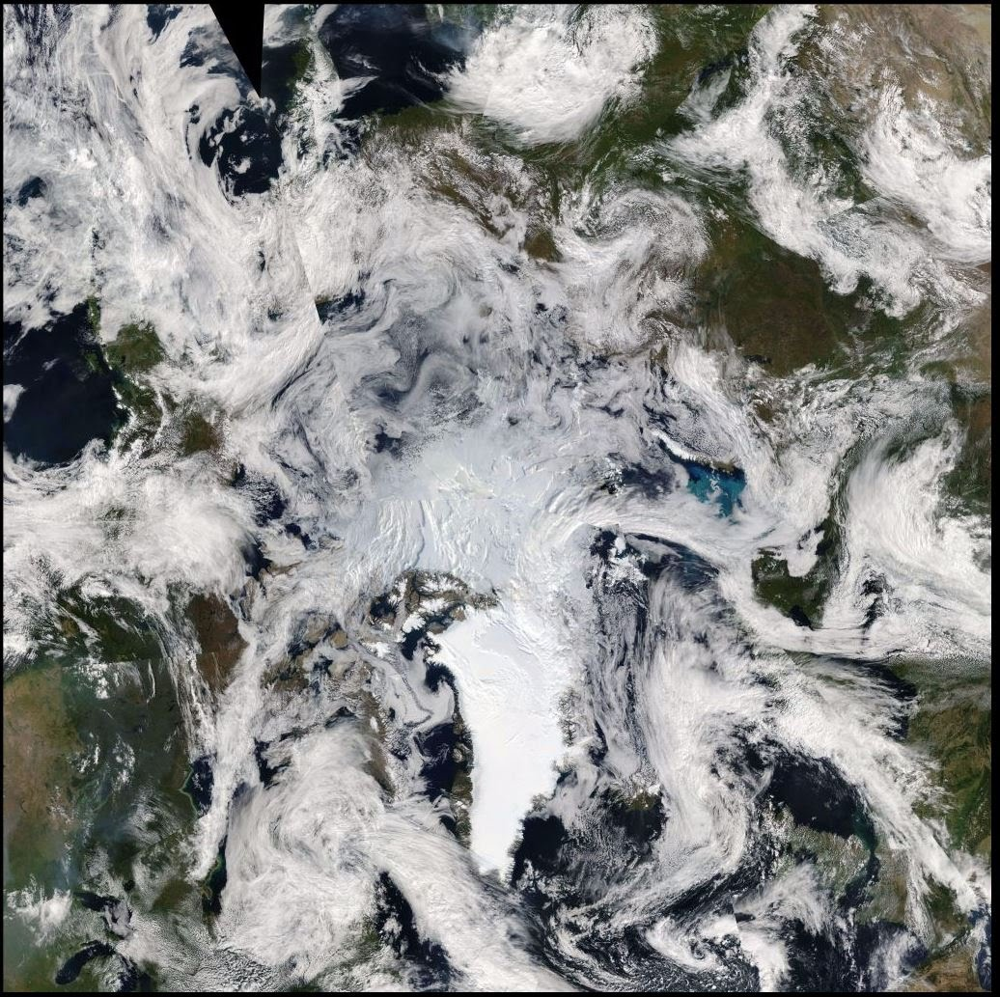

Sea Ice Area
Most official institutions use "sea ice extent" instead of "sea ice area". So why does CryosphereComputing use sea ice area? The most important reason for using extent is probably tradition. The first passive microwave measurements were taken in the 1970s when the world wasn't concerned about climate change. During that time the bigger concern was ships getting stuck in sea ice. With passive microwave measurements scientists were able to produce daily ice maps for the whole Arctic, which is a big step forward from aircraft or ground based reports. To get a reasonable ice edge (dangerous zone) a grid cell concentration of 15% was chosen. For the aim of providing safe passage for sea faring vessels sea ice extent is a reasonable metric, but for climate change analysis it is not an accurate description of the ocean surface.
Sea ice extent is a binary system, stating either there is ice in a grid cell or there isn't ice in a grid cell. The concentration threshold at which a grid cell is counted as ice covered is typically 15%. One grid cell in NSIDC 25km grid has an area of 625 km2 At 15% concentration the true ice area is 93.75 km2 So the extent metric can overestimate the true area by 666% (625 km2 / 93.75 km2 ) This is rarely the case, but in summer and autumn 200% overestimations are not untypical. Both grid cells below fulfill the 15% threshold and are counted as completely ice covered using the extent metric.

The articifcal area increase hides how close to an ice-free state the Arctic really is. The 2016 September daily minimum was announched as 4.14 million km2, but the true sea ice area was only 2.34 million km2. A good description of the minimum would be: The 2016 September minimum ice cover was 2.34 million km2 spread out over an area of 4.14 million km2. If we have a completely ice free ocean then the additional area soaking up solar energy is just 2.34 million km2 and not 4.14 million km2.
If this picture were a "grid cell" it would be counted as an intact rainforest using the extent metric. (23% rainforest concentration)

Winter conditions
26 Jan 2017, Sea of Okhotsk, NASA (EOSDIS) Worldview
In winter, new sea ice is very thin and not a solid ice pack. Sometimes it forms so-called Pancake_ice, which is very prone to melt in stormy conditions. In recent years this type of ice cover has increased dramatically over the Arctic. You don't need to be a climate scientist to see that this type of ice cover has different thermodynamic properties (heat exchange between bodies) than a solid ice pack. The albedo (absorption of sunlight) and energy exchange between ocean-atmosphere is somewhere between an ice free ocean and a solid ice pack. So thermodynamically 50% ice concentration is quite accurate even though visually the ice concentration is close to 90%.
Summer conditions

23 Jul 2012, Arctic Ocean, NASA (EOSDIS) Worldview

During the melting season melt ponds lower the sea ice albedo and change thermodynamic interactions with the atmosphere. The measured sea ice concentration reflects this change. The low concentration areas have high melting potential, either from melt ponds' low albedo, a very dispersed ice pack or both combined. Their high surface-area to volume ratio results in a high energy transfer from ocean, atmosphere or direct sunlight. (law of surface-area-to-volume) For the whole ice-pack the compaction ratio (Area / Extent) gives a very good indication of how quickly the sea ice will melt.
Albedo-Warming Potential
The Albedo-Warming Potential (AWP) quantifies the additional ocean warming from a lower ice cover at the poles. These calculations don't include cloud cover, therefore it is called "Warming Potential" and not actual warming. However, over the six-month period weather tends to average out and warm areas correlate well with low ice extent in September. The basis of all calculations is a global surface radiation model and NSIDC Sea Ice Concentration data.
Formula per gridcell
AWP Daily = ((1-SIC) * MJ) + 0.15 * MJ * SIC
AWP Accumulated = sum(AWPdaily)
MJ = incoming surface radiation per square meter
SIC = Sea Ice Concentration
The calculated values are arithmetic averages over the whole maximum possible ice extent (shown in light blue). All lakes and some marginal seas (Baltic Sea, Gulf of St. Lawrence) are not considered because their coastline to total area ratio is too high. Coastline measurement errors introduce just random noise.
The next graph shows the solar surface radiation per square meter for different latitudes. Unlike "top of the Atmosphere solar radiation" the high latitudes don't experience the highest surface radiation during peak summer. The low angle of solar radiation in high latitudes means more energy is absorbed by the atmosphere. This energy can also raise the surface temperature but is not relevant for surface albedo: ice vs water.
Astronomical summer: 20 March to 22 September
 AMSR2 Snow & Ice Volume
The AMSR2 sea ice thickness is a product by the "Arctic Data archive System". The exact algorithm is unknown to me, but it probably estimates the thickness from the AMSR2 channels (e.g. 6, 7, 10, 18, 23, 36 GHz) in either horizontal and/or vertical polarization. Like CryoSat it can't estimate sea ice thickness beneath melt ponds or the thickness of newly frozen ice slush. Instead ADS shows a melt concentration percentage (20-50%). My algorithm estimates the ice thinning during the melt season and new ice thickness during the freezing season. It has a higher spatial resolution (10km) than PIOMAS and higher temporal resolution for the entire Arctic than CryoSat and runs year round. It is also sensitive to snow cover and melt pond refreezing, which gives a better picture on the current melting or freezing conditions.
Due to the lack of a region mask all ice above 50 degree north is included in the product. It includes the Canadian lakes, Baikal lake and Baltic sea. It excludes the Great lakes, Caspian Sea, Aral sea, most of Gulf of St Lawrence, Yellow Sea, Sea of Japan and southern Sea of Okhotsk. The maximum ice thickness change is 5 cm per day, expect for ice drift. (grid-cell suddenly ice-covered or ice-free) The map is cropped to the Arctic Basin and shows 0-350 cm. The thickness is calculated up to 400 cm and the map is simply saturated above 350 cm to show more detail in the thin ice areas.
current Algorithm(v1.1): max ice thickness: 400 cm new ice thickness(first freeze): 20 cm minimum ice thickness (during melt algorithm): 25 cm maximum thickness change(measured ice thickness): 6.6 cm meltfactor: 5 freezefactor: 2.2

80N Region
North of 80°N is the the last place where spring starts. Temperatures remain below freezing until June. - The region holds the thickest sea ice - FDD indicate how thick the ice can grow over the winter - Currently (2010s) this is the only region where sea ice survives the summer melt. Topographical map (Google Earth)
2nd April 2015: Ocean and Continents are frozen up to around 50°N. Only the Atlantic Ocean is ice free up to 80°N near Svalbard.
28th Aug 2012: Close to a record low minimum sea ice area. The only sea ice left is north of 80°N.
